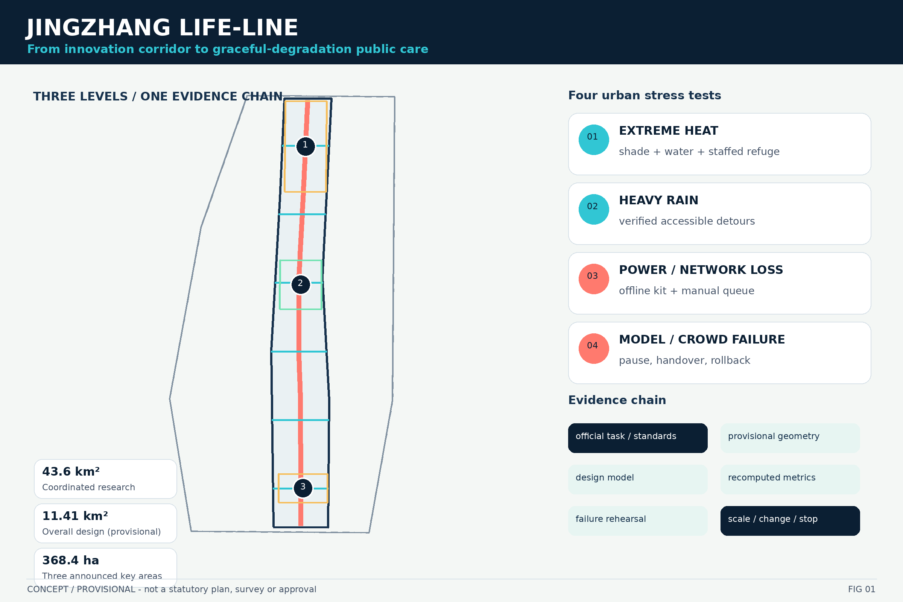
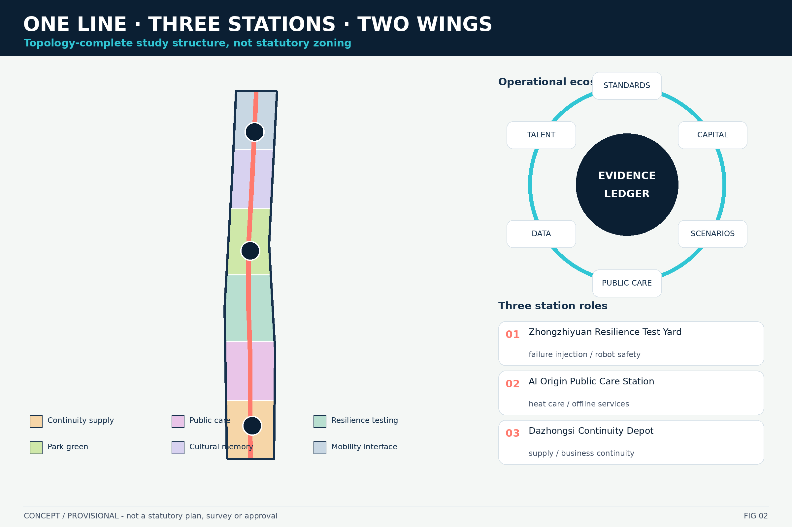
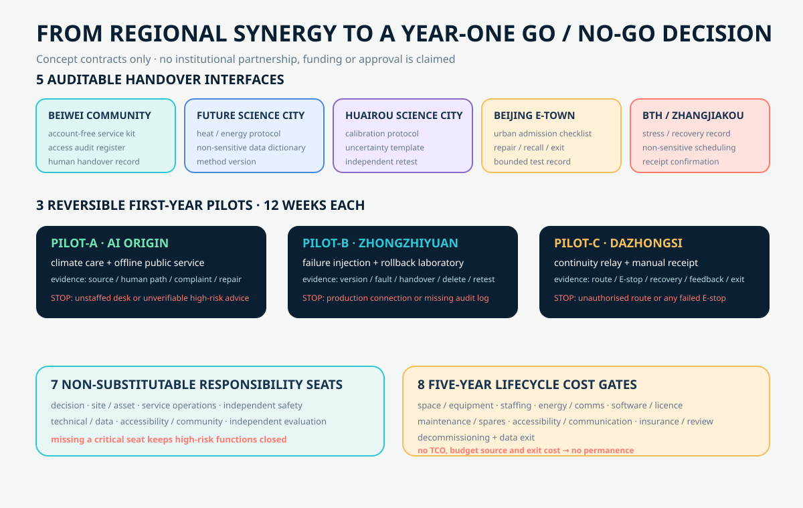
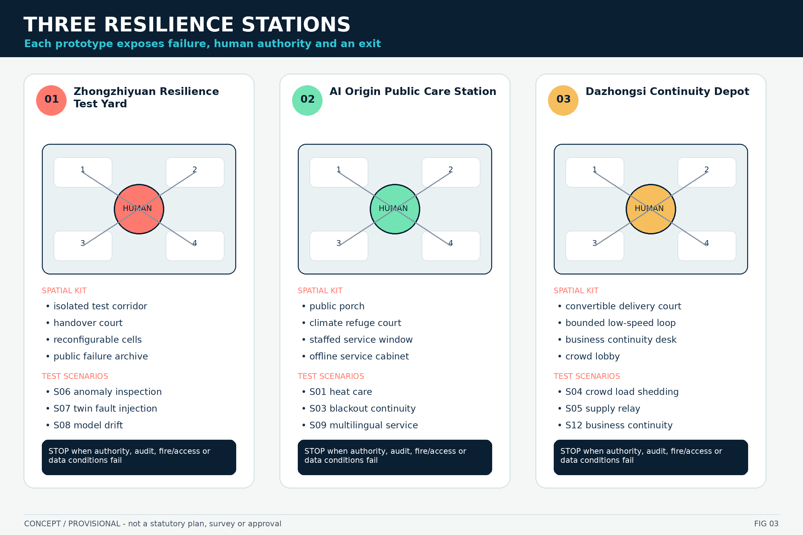
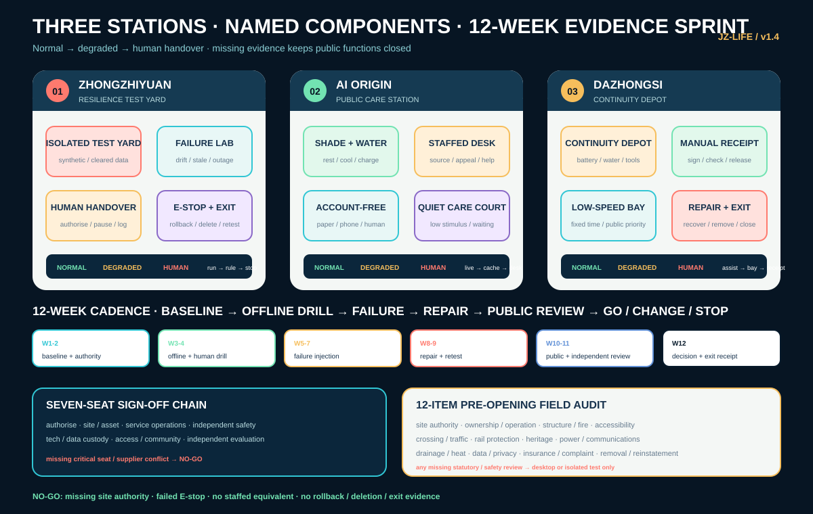
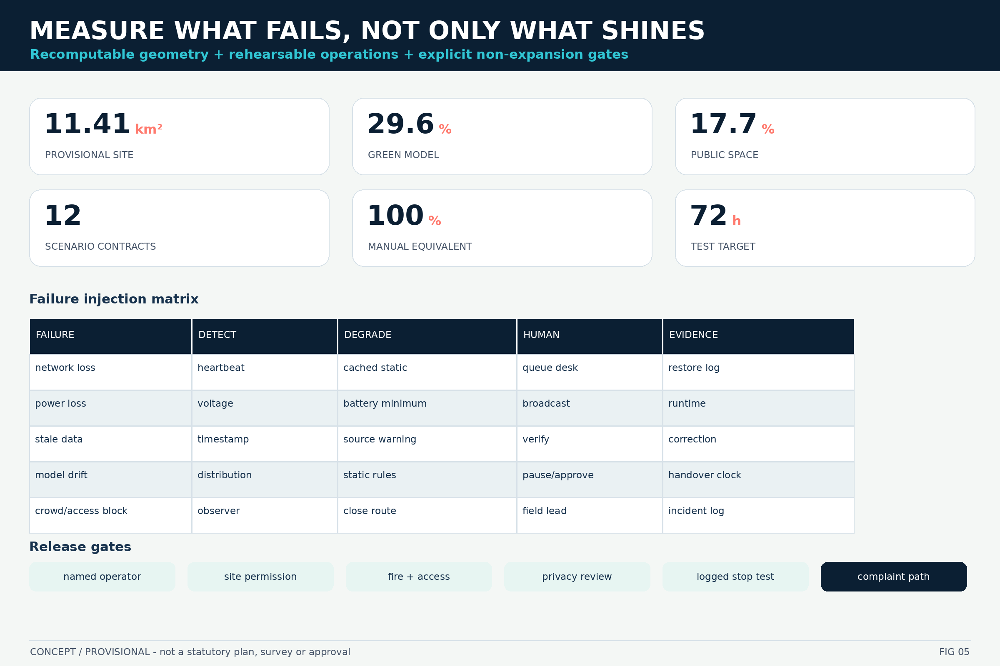

JZ-LIFE v1.4 / EVIDENCE UPGRADE
OFFLINE · CONCEPT + PROVISIONAL · CHINESE BOARD TEXT IS RASTERIZED · NO REMOTE FONT OR RESOURCE
SITE OVERVIEW / EVIDENCE CHAIN

THREE SCOPES / LAND USE / ECOSYSTEM LOOP

REGIONAL INTERFACES / PILOTS / RESPONSIBILITY / COST

THREE KEY AREAS / SPATIAL PROTOTYPES

NAMED COMPONENTS / 12-WEEK EVIDENCE / SIGN-OFF / AUDIT

MOBILITY / BLUE-GREEN PUBLIC SPACE

METRICS / FAILURE INJECTION / RELEASE GATES

Overview map · Three scopes · Key areas · Land use · Mobility · Blue-green public space · Buildings · Projects · AI scenarios · Core metrics · Task coverage · Self-check · Sources · Assumptions